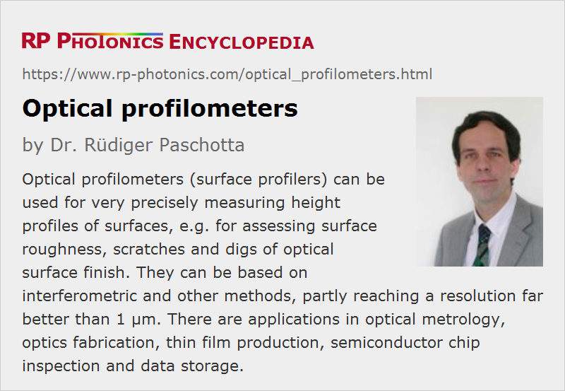

Optical Profilometers
Definition: optical non-contact instruments for precisely measuring surface profiles
Alternative term: optical surface profilers
More general term: optical metrology instruments
German: Profilometer, Topographie-Messsysteme
Categories: vision, displays and imaging, optical metrology
How to cite the article; suggest additional literature
Author: Dr. Rüdiger Paschotta
Optical profilometers, also called optical surface profilers, are optical non-contact instruments for precisely measuring surface profiles. Essentially, they measure the surface elevation z as a function of lateral coordinates x and y over some area. This differs from the function of an ordinary microscope, for example, where the image contrast can depend on a number of optical properties of the sample, which are often not related to the object's topology.
Profilometers are used, for example, for inspecting surfaces of laser mirrors, prisms or glass flats, even of super-polished optics. Details of the surface form and roughness (not just an r.m.s. roughness value) and isolated defects such as scratches or digs of surface finish can be detected. Therefore, high resolution profilometers are essential tools for many applications:
- They are essential for fundamental surface analysis, quality control and process development in optical fabrication, with application on polished or coated surfaces.
- In semiconductor chip inspection, the surface topography (including roughness) e.g. after certain lithographic production steps is one of the important characteristics for judging the quality of results.
- In the fabrication of mechanical parts, the progress of surface finishing processes can be monitored.
- Research in tribology profits from assessing the microscopic details of surfaces.
There are numerous other fields of scientific research and industrial inspection which can profit from an optical profiler. Devices with lower spatial resolution can be used for purposes like measuring surface shapes over larger areas.
There are also other kinds of (non-optical) profilometers, namely contact profilometers, which are based on mechanical scanning of surfaces with a small tip, called a stylus. Tiny displacements of the stylus in contact with the probed surface, which reflects the surface topography, can be analyzed with a capacitance sensor, for example. A related method is force microscopy, because the measurements involve mechanical forces between the stylus (tip) and the sample. In extreme cases, axial and lateral resolutions down to a few tens of nanometers are reached, so that single atoms can be resolved; this is called atomic force microscopy (AFM).
Optical profilers have the advantage of safely non-destructive non-contact surface analysis while partly offering similar measurement accuracy and often higher speed. In some cases, they also deliver additional information concerning the optical properties of a surface, e.g. on its color.
Essential Performance Factors of Profilometers
Profiler systems can differ in a number of essential performance factors, which may exclude a proper surface analysis in various situations. The most important aspects are summarized in the following:
- The spatial resolution is often substantially different in longitudinal (vertical) and lateral (horizontal, transverse) direction. Particularly in the longitudinal direction can be of the order of 10 nm for some kinds of devices, while the lateral resolution is more often of the order of 1 μm or more. Some surface profilers allow the user to choose between different objectives for different accuracy levels.
- Typically, devices produce images with a limited field of view (image area). One may then translate the sample or the measurement device to look at different sections of the surface area, but it is not always simple to produce continuous images by stitching together smaller images. Some methods allow one to investigate a rather large area with one shot, but typically with lower spatial resolution.
- The longitudinal measurement range can also vary substantially between different methods. Some of them are suitable only for nearly flat surfaces.
- Some measurement principles hit limitations when samples with too large surface slope are investigated; they may lead to totally wrong readings for such regions. Others do not have that problem and can be used even for devices with steep structures.
- The image acquisition time is also an important factor for many applications, and can vary substantially, depending on the measurement method and the required image area and accuracy. Some devices are suitable even for real-time analysis with very high image frame rates.
Other aspects concerning the applicability of methods to certain types of samples or situations; some examples:
- The methods differ very much in terms of the possible working distance, i.e., the distance between the measurement device and the surface under test. Some of them need working distances well below a millimeter (possibly creating a risk of inadvertent contact), while others can work from substantial distances.
- Some measurement methods work only on certain materials, e.g. on smooth samples with a substantial specular reflectivity. There are suitable profiles for all sort of materials, such as metals, glasses, ceramics, polymers, paints and paper.
- High-resolution instruments often require careful suppression of mechanical vibrations with suitable damping mounts etc. Obviously, they should not be operated in environments with excessive vibrations. Some profilers, however, are so fast that mechanical vibrations of the sample are less critical.
Types of Profilometer Systems and their Operation Principles
Optical profilometers can be based on very different measurement principles, as explained in the following sections. Suppliers of commercially available devices do not always fully reveal the detailed operation principles, but often only the reached performance figures.
Traditional Interferometers
Traditional types of interferometers, often operated with laser light of high spatial and temporal coherence, such as Twyman–Green interferometers, are often used for surface characterization, for example. Here, one generates a fringe pattern by interference of light reflected from a surface with light from the same source reflected on a very flat reference surface. With a slight tilt e.g. of the reference surface, one obtains a regular fringe pattern, and deformations of the fringes reveal deviations from perfect flatness.
In modern instruments, interference patterns are not simply viewed, but recorded with some electronic image sensor (e.g. a CCD sensor), and the fringe patterns can be further processed with computer software. Such software can acquire topographic information and compute corresponding images, e.g. displaying deviations from desired shapes with a color code. Such additions can be regarded as realizing a profiler based on an interferometer, which itself would not yet quality as profilometer.
Such interferometric methods are very accurate concerning axial resolution. They are mostly applied to nearly flat surfaces or surfaces with a well defined curvature, as often encountered in optics. The lateral resolution is typically quite limited, e.g. a few tens of microns. It can be better with microscopic methods such as those described in the following section.
Interferometer Microscopes
For realizing an interferometer, e.g. of Twyman–Green type, with higher transverse resolution, one could in principle insert ordinary microscope objectives of the same type into the setup – one in the probe arm and one in the reference arm. However, it is more practical to realize a modified kind of microscope interferometer, using only one objective, but a special kind of interferometer objective, which integrates the beam splitter and the reference mirror.
There are different implementations of specialized interferometry objectives. For example, instead of an ordinary microscope objective, one may use a Mirau objective (Figure 4, left side), realizing the principle of a Mirau interferometer (named after André Henri Mirau). Between the object plane and the imaging optics, there is a partially reflecting mirror (beam splitter), and above it there is a small reference mirror. Light coming down through the objective will partially get to the sample and partially to the reference mirror, and what is reflected on both is recombined at the beam splitter. Due to the broad bandwidth of the used light, interference fringes are observed only when the distances from the beam splitter to the object and to the reference mirror are about equal. That way, one can measure the elevation of the object point.
Alternatively, one may use a Michelson objective (Figure 4, right side). Those are usually preferred for cases with lower magnification and offer a larger working distance.
Confocal Scanning Microscopy

The analysis of sample elevation can be based on the principle of confocal scanning microscopy (Figure 5). Here, a high longitudinal resolution is essentially reached with the following principle:
- Point illumination: a small spot on the sample is illuminated with a tightly focused laser beam.
- Confocal detection: a plane of the sample is imaged onto a small pinhole, so that a high transmission through the pinhole is achieved only when the target point is at a certain elevation.
- Scanning: for each lateral position, one scans the longitudinal position of the sample (or alternatively the microscope objective or some mirror), and determines the point of maximum transmission, which reflects the local elevation of the sample.
For topographic measurements, such a microscope can be programmed such that for every point on the imaged area it measures the depth value for which maximum signal intensity is obtained.
In some cases, it is convenient to replace the pinhole with the end of a single-mode fiber in order to obtain a particularly compact imaging head.
There are also profilers which instead of a microscope objective use some telecentric optics for scanning larger areas (with dimensions of several centimeters). In such cases, the lateral resolution is substantially lower, e.g. some tens of microns. The axial resolution for flat surfaces can still be very high.
Focus Variation Microscopy
Focus variation microscopy is another method of scanning microscopy, but not necessarily involving a laser. Its operation principle is to capture microscopic images with different focus adjustments and find that adjustment which leads to maximum sharpness of the image (similar to the autofocus in some photo cameras). That adjustment is then a measure for the elevation at the center of the image. By scanning the sample position or the viewing direction of the microscope, one can acquire information for complete two-dimensional image.
The used image sensor needs to have only a quite limited number of pixels, since the image sharpness is relevant only in a small area around the point of interest.
Of course, focus variation works only if there is “something to see” on the object – not if an object is nearly perfectly flat and uniformly illuminated. Modulated (structured) illumination is a solution which makes the method work for many kinds of samples.
The axial resolution can be a few microns when using a high-NA microscope objective. The lateral one can be similar or better due to the small depth of field.
In comparison with confocal scanning microscopy, the method is simpler to realize and less sensitive to problems with steep slopes on the sample.
Low Coherence Interferometry
Some profilometers are essentially white light interferometers, utilizing the principle of optical coherence tomography. They create topographic images by scanning a sample with a tightly focused beam, acquiring information on the elevation of a single point at the time and assembling those data to a complete image in a computer. The used light source is a kind of white light source, i.e., it is a broad optical bandwidth, such that interference fringes are detected only when the optical path length difference of the interferometer is very small (see Figure 6). Therefore, there is not the usual ambiguity of interferometers operated with monochromatic light. For more details of the operation principle, see the article on optical coherence tomography.
The transverse resolution of such OCT-based profilers is similar to that of usual microscopes, i.e., a few microns or even significantly below 1 μm. In the lateral direction, it can even be substantially better, down to a couple of nanometers; it is essentially limited by the bandwidth of the source.
Typically, one will use an OCT method with quite fast acquisition, not requiring a mechanical scan for each sample point. Still, one needs to scan the sample position, typically in two dimensions. The total image acquisition time depends very much on the used OCT method, the required field size and resolution, and therefore differs very much between different devices and measurement conditions.
Digital Holographic Microscopy
Digital holography provides methods where a complete surface profile can be acquired with a single acquisition using an electronic image sensor. The basic principle is that one records a hologram, i.e., an interference pattern involving the surface under investigation and a reference beam. The hologram is not reconstructed in traditional ways by illumination with laser light, but rather numerically on a computer.
Due to the high speed of such methods, very high acquisition rates are possible, sometimes with more than 1000 image frames per second. Therefore, one can even monitor vibrations in real time, and there is no need for vibration suppression. Also, measurements can be performed on moving targets.
Triangulation Sensors
Triangulation is a widely used measurement method which is based on detecting changes of the position of a laser beam. In case of a profilometer, a sharply focused laser beam hits the investigated surface under a substantial angle, so that changes of elevation of the sample are translated into changes of position, which can be measured with a position-sensitive detector. (Autocollimators are often used.) Limitations of the method are encountered for objects with diffuse scattering, where one does not obtain a clean reflected beam. For relatively smooth surfaces however, certain optimized triangulation sends can reach very high lateral resolutions far better than 0.1 μm. On the other hand, the technique is suitable for scanning large areas.
Triangulation sensors can work with strongly curved and irregular surfaces, where the application of interferometers would be difficult.
Time-of-flight Sensors
The principle of time-of-flight measurements is usually used for larger distances, but it can also be optimized for a relatively high lateral resolution, partially better than 1 mm. This is of course still very poor compared with some interferometric methods and clearly insufficient for optics inspection, for example.
Profilometers Based on Structured Light
The topography of surfaces can be measured by illuminating the surface with structured light, for example with a regular pattern of fine stripes, and recording an image which reveals surface features through the deformation of the stripes. Such methods can be implemented with a relatively simple and robust technology, but they can never reach the lateral or axial resolution of interferometric instruments.
Geometric Product Specifications
Profilers do not only deliver images and topography graphs; they can also be used to obtain geometric product specifications, e.g. concerning the roughness of a surface. There are certain standards such as ISO 25178, which define in detail how certain surface texture parameters are defined and how they should be calculated from measured surface profiles. Such standards also define nominal characteristics of various types of profilometer instruments and how they can be calibrated, using certain measurement standards.
Suppliers
The RP Photonics Buyer's Guide contains 9 suppliers for optical profilometers.
Questions and Comments from Users
Here you can submit questions and comments. As far as they get accepted by the author, they will appear above this paragraph together with the author’s answer. The author will decide on acceptance based on certain criteria. Essentially, the issue must be of sufficiently broad interest.
Please do not enter personal data here; we would otherwise delete it soon. (See also our privacy declaration.) If you wish to receive personal feedback or consultancy from the author, please contact him e.g. via e-mail.
By submitting the information, you give your consent to the potential publication of your inputs on our website according to our rules. (If you later retract your consent, we will delete those inputs.) As your inputs are first reviewed by the author, they may be published with some delay.
See also: white light interferometers, optical metrology, confocal scanning microscopes
and other articles in the categories vision, displays and imaging, optical metrology
|  |
If you like this page, please share the link with your friends and colleagues, e.g. via social media:
These sharing buttons are implemented in a privacy-friendly way!